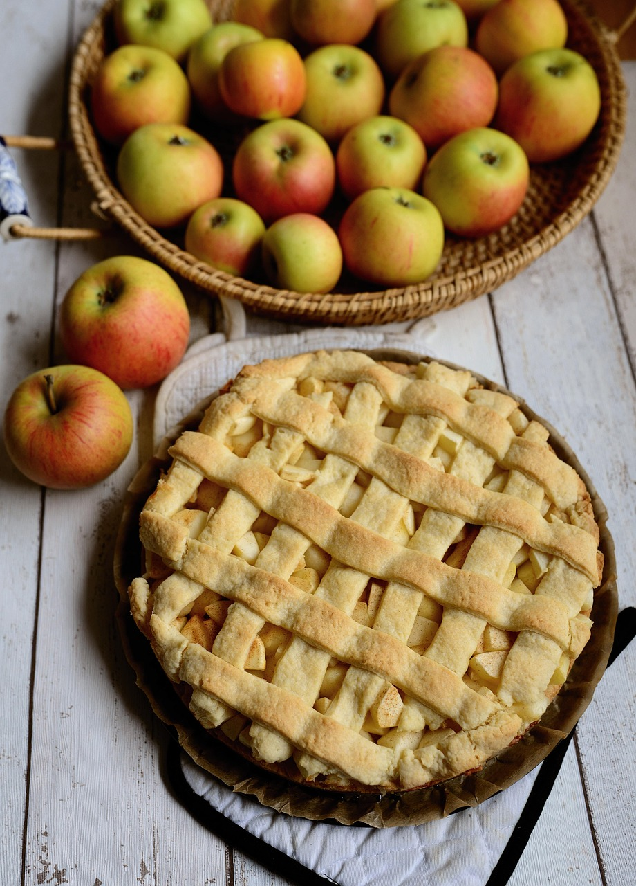

RECETA
INGREDIENTES
- 180 g de harina de trigo
- 4 huevo
- 225 g de azúcar
- Mermelada
- 6 manzanas grandes
- leche 240 ml

PREPARACION
Extraer corazón de 4 manzana ademas de pelar las manzanas y dividirlas en varios pedazos
En una taza colocar las manzans con la azucar(225 g de)
y agregamos los cuatro huevos y la leche(240 ml)
Triturar hasta que tengamos una mezcla homogenea
despues de obtener la mezcla homogenea agregamos la harina
en un molde de 20 cm de diametro introducimos la mezcla homogenea
luego hagarramos las dos manzanas que falta y le extraemos el corazon y las dividimos en capas ni muy finas ni muy gruesas
se agregan los pedazos sobre la masa heca anterior mente
ya para ir finalizando se introduce en el horno por 60 minutos
Para finalizar agregar una capa de mermelada sobre la tarta